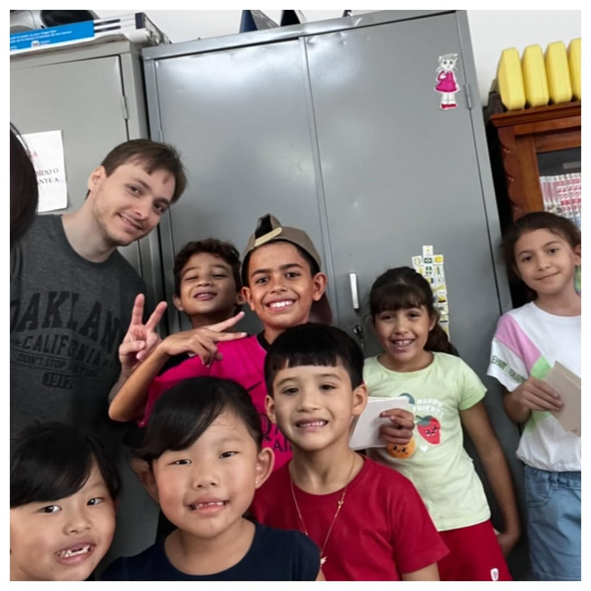

👧 Crianças (Hikaru Youtien / ひかる幼稚園)
Aprendizado lúdico e interativo, com foco em leitura e escrita básicas (hiragana, katakana e primeiros kanjis). Ideal para filhos de descendentes ou para quem quer introduzir a cultura japonesa desde cedo.

Aprenda a língua e a cultura japonesa com professores experientes, em um ambiente acolhedor e tradicional. O Nihongo Gakkō do Kaikan oferece aulas para crianças, jovens e adultos, em turmas organizadas por nível e objetivo.
O Nihongo Gakkō oferece aulas adaptadas para cada fase da vida. As metodologias e materiais são pensados para tornar o aprendizado acessível, envolvente e eficaz para todos os públicos.
Aprendizado lúdico e interativo, com foco em leitura e escrita básicas (hiragana, katakana e primeiros kanjis). Ideal para filhos de descendentes ou para quem quer introduzir a cultura japonesa desde cedo.
Aulas voltadas para conversação, leitura e escrita, com níveis do básico ao avançado. Perfeito para quem quer viajar, trabalhar ou estudar no Japão.
Escolha o melhor horário para sua rotina. As turmas são pequenas, garantindo atenção individual e aprendizado de qualidade.
| Turma | Dias | Horário | Faixa Etária |
|---|---|---|---|
| Infantil | Terça Quinta e Sexta | 13:30h – 15:30h | 5 a 11 anos |
| Jovens e Adultos (Diurno) | Terça Quinta e Sexta | 13:30h – 15:30h | A partir de 12 anos |
| Jovens e Adultos (Noturno) | Turmas em 2026 | 19:30h – 21h | A partir de 12 anos |
Nosso curso de japonês atrai diferentes perfis de alunos — cada um com um sonho, uma motivação e um motivo especial para aprender. Descubra qual é o seu.
Aprenda japonês para assistir animes sem legenda, entender letras de J-Pop e ler mangás no original. Viva o Japão que você sempre admirou.
Aprenda o japonês prático do cotidiano: alugar apartamento, abrir conta, ir ao médico e entender a cultura local para viver com confiança no Japão.
Prepare-se para sua jornada ao Japão! Nossas aulas ensinam como se comunicar, ler placas, pedir comida e viver o dia a dia com independência.
Reconecte-se com suas raízes, converse com familiares em japonês e compreenda a cultura e os rituais que fazem parte da comunidade japonesa.
Domine o idioma que abre portas! O japonês é um diferencial raro para quem busca bolsas, vagas em empresas japonesas ou certificações como o JLPT.
Aulas lúdicas e culturais que estimulam o cérebro, a disciplina e o respeito — com músicas, jogos, origami e histórias japonesas.
Compreenda o idioma por trás das artes que você pratica — como karatê, judô, ikebana ou shodô — e aprofunde sua conexão com a tradição.
Todos os alunos têm acesso à biblioteca do Kaikan — com livros, mangás e revistas — e a eventos culturais como matsuri, oficinas e cerimônias do chá.
As matrículas estão abertas durante todo o ano! Entre em contato e venha fazer parte da nossa comunidade.
📞 Telefone: (xx) xxxx-xxxx
📧 E-mail: nihongo@[kaikan].org
📍 Endereço: [Endereço do Kaikan]